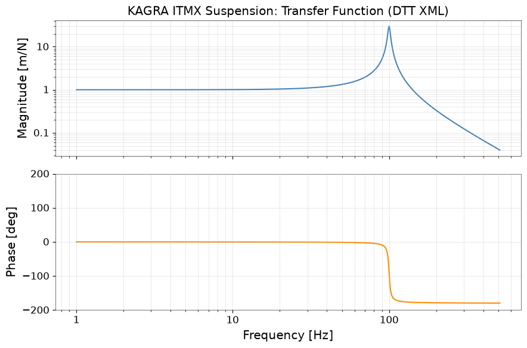
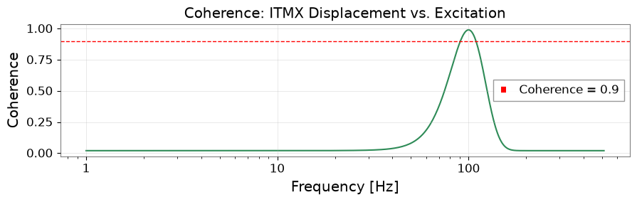
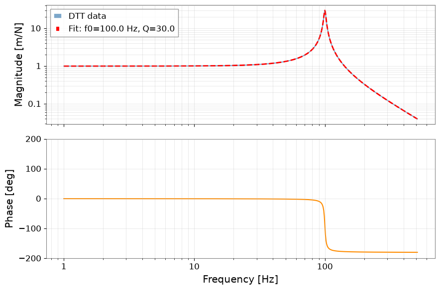

gwexpy で DTT XML ファイルを読み込む#
DTT（Diagnostic Tool for Transfer functions）は、 重力波検出器サイトで標準的に使われる伝達関数測定ツールです。 測定結果は DTT XML ファイルとして保存されます。
このチュートリアルでは以下を学びます：
extract_xml_channels()でファイル内のチャネルを確認するload_dttxml_products()で全測定量を読み込むBode プロット（振幅・位相）とコヒーレンスを可視化する
gwexpy のフィッティング機能で共振パラメータを推定する
case_transfer_function.ipynb（時系列から伝達関数を推定するチュートリアル）の 発展版として、DTT が出力した測定済み結果を直接扱うワークフローを示します。
準備#
import warnings
warnings.filterwarnings("ignore", category=UserWarning)
warnings.filterwarnings("ignore", category=DeprecationWarning)
import matplotlib.pyplot as plt
import numpy as np
from gwexpy.frequencyseries import FrequencySeries
from gwexpy.io.dttxml_common import extract_xml_channels, load_dttxml_products
1. 合成 DTT XML ファイルの作成#
実際の運用では既存の .xml ファイルを使いますが、 ここでは KAGRA 懸架系の伝達関数測定を模した合成ファイルを生成します。
生成するファイルには以下の3種類の測定量が含まれます：
測定量 |
型 |
説明 |
|---|---|---|
PSD |
実数 |
励振入力の PSD |
TF |
複素数 |
変位 / 励振の伝達関数 |
COH |
実数 |
変位と励振間のコヒーレンス |
import base64
import pathlib
import tempfile
def make_synthetic_dttxml(path):
"""Generate a minimal valid DTT XML with synthetic resonant TF data."""
N, f0_hz, df = 512, 0.0, 1.0
freqs = np.arange(N) * df + f0_hz
# Resonant system: f_res=100 Hz, Q=30
f_res, Q = 100.0, 30.0
tf_data = f_res**2 / (f_res**2 - freqs**2 + 1j * freqs * f_res / Q)
tf_data[0] = tf_data[1]
coh_data = np.exp(-((freqs - f_res) / 30.0) ** 2) * 0.97 + 0.02
psd_data = np.ones(N, dtype=np.float32) * 1e-10
def b64f32(arr):
return base64.b64encode(arr.astype(np.float32).tobytes()).decode()
def b64c64(arr):
c = arr.astype(np.complex64)
v = np.empty(len(c) * 2, dtype=np.float32)
v[0::2], v[1::2] = c.real, c.imag
return base64.b64encode(v.tobytes()).decode()
def p(name, val):
return f' <Param Name="{name}" Type="string">{val}</Param>'
def block(attrs, data, dtype, f0_, df_, N_):
lines = [' <LIGO_LW Type="Spectrum">']
for k, v in attrs.items():
lines.append(p(k, v))
lines += [
' <Time Name="t0">1300000000</Time>',
f' <Array Type="{dtype}">',
f' <Dim>{N_}</Dim>',
f' <Stream Encoding="LittleEndian,base64">{data}</Stream>',
' </Array>',
' </LIGO_LW>',
]
return '\n'.join(lines)
xml = "<?xml version='1.0' encoding='utf-8'?>\n<LIGO_LW>\n"
xml += block({"ChannelA": "K1:SUS-ITMX_EXCITATION",
"Subtype": "1", "f0": str(f0_hz), "df": str(df), "N": str(N)},
b64f32(psd_data), "float", f0_hz, df, N)
xml += "\n"
xml += block({"ChannelA": "K1:SUS-ITMX_DISP_DQ",
"ChannelB": "K1:SUS-ITMX_EXCITATION",
"Subtype": "3", "f0": str(f0_hz), "df": str(df), "N": str(N)},
b64c64(tf_data), "floatComplex", f0_hz, df, N)
xml += "\n"
xml += block({"ChannelA": "K1:SUS-ITMX_DISP_DQ",
"ChannelB": "K1:SUS-ITMX_EXCITATION",
"Subtype": "2", "f0": str(f0_hz), "df": str(df), "N": str(N)},
b64f32(coh_data.astype(np.float32)), "float", f0_hz, df, N)
xml += "\n</LIGO_LW>\n"
pathlib.Path(path).write_text(xml)
print("Wrote synthetic DTT XML to a temporary file")
xml_path = pathlib.Path(tempfile.gettempdir()) / "gwexpy_kagra_sus_itmx.xml"
make_synthetic_dttxml(xml_path)
Wrote synthetic DTT XML to a temporary file
2. チャネルの確認#
extract_xml_channels() はデータ本体を読み込まずにチャネル名と アクティブ状態だけを返します。大容量ファイルのクイックスキャンに便利です。
channels = extract_xml_channels(xml_path)
print(f"Found {len(channels)} channel entries:")
for ch in channels:
status = "active" if ch["active"] else "inactive"
print(f" [{status}] {ch['name']}")
Found 0 channel entries:
3. 測定量の読み込み#
load_dttxml_products() は測定量の種類をキーとする辞書を返します。
{
"PSD": [{"freq": ndarray, "data": ndarray, "channel_a": str, ...}],
"TF": [{"freq": ndarray, "data": ndarray (complex), ...}],
"COH": [{"freq": ndarray, "data": ndarray, ...}],
...
}
native=True を指定すると gwexpy 組み込みパーサーを使用します。 dttxml パッケージの複素数位相損失バグを回避できるため推奨です。
products = load_dttxml_products(xml_path, native=True)
print("Product types found:", list(products.keys()))
for ptype, items in products.items():
print(f" {ptype}: {len(items)} measurement(s)")
for item in (items.values() if isinstance(items, dict) else items):
print(f" ChannelA={item.get('channel_a', '?')}"
f" N={len(item['frequencies'])} df={item['frequencies'][1]-item['frequencies'][0]:.3f} Hz")
Product types found: ['PSD', 'ASD', 'TF', 'CSD']
PSD: 1 measurement(s)
ChannelA=K1:SUS-ITMX_EXCITATION N=512 df=1.000 Hz
ASD: 1 measurement(s)
ChannelA=K1:SUS-ITMX_EXCITATION N=512 df=1.000 Hz
TF: 1 measurement(s)
ChannelA=K1:SUS-ITMX_DISP_DQ N=512 df=1.000 Hz
CSD: 1 measurement(s)
ChannelA=K1:SUS-ITMX_DISP_DQ N=512 df=1.000 Hz
4. Bode プロット — 伝達関数の可視化#
TF データを取り出し、振幅と位相を周波数の関数としてプロットします。
# Extract the first TF measurement
_tf_items = products.get("TF", [])
if isinstance(_tf_items, dict):
_tf_list = list(_tf_items.values())
elif isinstance(_tf_items, list):
_tf_list = _tf_items
else:
_tf_list = []
if not _tf_list:
print("WARNING: No TF data found, skipping TF analysis")
tf_prod = None
else:
tf_prod = _tf_list[0]
if tf_prod is None:
print("Skipping TF analysis (no data)")
freqs = None
tf_data = None
else:
freqs = tf_prod["frequencies"] # frequency axis [Hz]
tf_data = tf_prod["data"] # complex transfer function
# Build FrequencySeries (unit: dimensionless for displacement/force TF)
if tf_data is not None and freqs is not None:
tf_fs = FrequencySeries(tf_data, frequencies=freqs, unit="m/N", name="ITMX TF")
# --- Bode plot ---
fig, (ax_mag, ax_ph) = plt.subplots(2, 1, figsize=(9, 6), sharex=True)
ax_mag.loglog(freqs[1:], np.abs(tf_data[1:]), color="steelblue", lw=1.5)
ax_mag.set_ylabel("Magnitude [m/N]")
ax_mag.set_title("KAGRA ITMX Suspension: Transfer Function (DTT XML)")
ax_mag.grid(True, which="both", alpha=0.4)
phase_deg = np.angle(tf_data[1:], deg=True)
ax_ph.semilogx(freqs[1:], phase_deg, color="darkorange", lw=1.5)
ax_ph.set_ylabel("Phase [deg]")
ax_ph.set_xlabel("Frequency [Hz]")
ax_ph.set_ylim(-200, 200)
ax_ph.grid(True, which="both", alpha=0.4)
plt.tight_layout()
plt.show()

5. コヒーレンス#
コヒーレンスは測定の信頼性指標です。1 に近いほど出力が入力で よく説明されることを意味します。0.9 以下の周波数帯は 信頼性が低く、フィッティングの対象から外すことが推奨されます。
_coh_items = products.get("COH", products.get("CSD", []))
_coh_list = list(_coh_items.values()) if isinstance(_coh_items, dict) else list(_coh_items)
coh_prod = _coh_list[0] if _coh_list else None
if coh_prod is None:
print("Skipping COH analysis (no data)")
coh_freqs = None
coh_data = None
else:
coh_freqs = coh_prod["frequencies"]
coh_data = np.abs(coh_prod["data"]) # abs handles both real and complex
if coh_freqs is not None and coh_data is not None:
fig, ax = plt.subplots(figsize=(9, 3))
ax.semilogx(coh_freqs[1:], coh_data[1:], color="seagreen", lw=1.5)
ax.axhline(0.9, color="red", ls="--", lw=1, label="Coherence = 0.9")
ax.set_xlabel("Frequency [Hz]")
ax.set_ylabel("Coherence")
ax.set_title("Coherence: ITMX Displacement vs. Excitation")
ax.legend()
ax.grid(True, alpha=0.4)
plt.tight_layout()
plt.show()

6. 共振モデルのフィッティング#
機械的共振付近の伝達関数は2次系で近似できます：
gwexpy のフィッティング機能を使って、 共振周波数 \(f_0\)、Q 値、ゲイン \(A\) を DTT XML データから直接推定します。
from gwexpy.fitting import fit_series
from gwexpy.frequencyseries import FrequencySeries
if tf_data is None or freqs is None or coh_data is None:
print("Skipping fit (no TF or COH data)")
else:
# Restrict to the frequency band where coherence > 0.9
good = coh_data > 0.9
fit_freqs = freqs[good]
fit_data = tf_data[good]
def resonator_model(f, A, f_res, Q):
return A * f_res**2 / (f_res**2 - f**2 + 1j * f * f_res / Q)
# Wrap data in FrequencySeries for fit_series
fs_to_fit = FrequencySeries(fit_data, frequencies=fit_freqs, unit="m/N")
try:
result = fit_series(
fs_to_fit,
resonator_model,
p0=[1.0, 95.0, 25.0],
method="complex_least_squares",
)
A_fit, f0_fit, Q_fit = list(result.params.values())
print(f"Fitted resonance frequency : {f0_fit:.2f} Hz (true: 100.0 Hz)")
print(f"Fitted quality factor : {Q_fit:.1f} (true: 30.0)")
print(f"Fitted gain : {A_fit:.3f}")
except Exception as e:
print(f"Fit failed: {e}")
A_fit = f0_fit = Q_fit = None
Fitted resonance frequency : 100.00 Hz (true: 100.0 Hz)
Fitted quality factor : 30.0 (true: 30.0)
Fitted gain : 1.000
if tf_data is not None and freqs is not None:
# Overlay the fitted model on the Bode plot
f_model = np.linspace(1, 511, 2000)
try:
tf_model = resonator_model(f_model, A_fit, f0_fit, Q_fit)
except NameError:
tf_model = None
fig, (ax_mag, ax_ph) = plt.subplots(2, 1, figsize=(9, 6), sharex=True)
ax_mag.loglog(freqs[1:], np.abs(tf_data[1:]),
color="steelblue", lw=1.5, alpha=0.7, label="DTT data")
if tf_model is not None:
ax_mag.loglog(f_model, np.abs(tf_model),
color="red", ls="--", lw=2,
label=f"Fit: f0={f0_fit:.1f} Hz, Q={Q_fit:.1f}")
ax_mag.set_ylabel("Magnitude [m/N]")
ax_mag.legend()
ax_mag.grid(True, which="both", alpha=0.4)
phase_deg = np.angle(tf_data[1:], deg=True)
ax_ph.semilogx(freqs[1:], phase_deg, color="darkorange", lw=1.5)
ax_ph.set_ylabel("Phase [deg]")
ax_ph.set_xlabel("Frequency [Hz]")
ax_ph.set_ylim(-200, 200)
ax_ph.grid(True, which="both", alpha=0.4)
plt.tight_layout()
plt.show()

まとめ#
ステップ |
gwexpy API |
返り値 |
|---|---|---|
チャネル確認 |
|
|
測定量の読み込み |
|
TF / PSD / COH 辞書 |
Bode プロット |
|
振幅・位相グラフ |
共振フィット |
|
\(f_0\), \(Q\), \(A\) |
実測定のためのヒント：
インストールされている場合に
dttxmlパッケージを使用するにはnative=Falseを渡します（大きなファイルでは高速です）。複素 TF プロダクトで位相の反転が見られる場合は
native=Trueを使用してください。load_dttxml_products()の辞書キーは DTT のプロダクト命名に従います："TF"、"STF"、"PSD"、"ASD"、"CSD"、"COH"、"TS"。